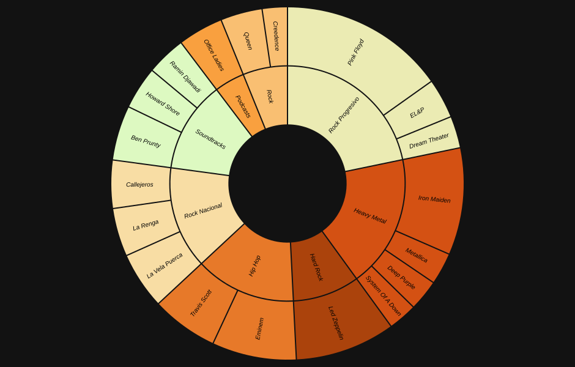

Análisis Detallado
Top Artistas y Géneros
Distribución de minutos por artista y género.

Prevalencia Anual
Evolución Temporal
Rituales: Día y Hora
El mapa de calor permite identificar visualmente los momentos de mayor intensidad en la escucha.